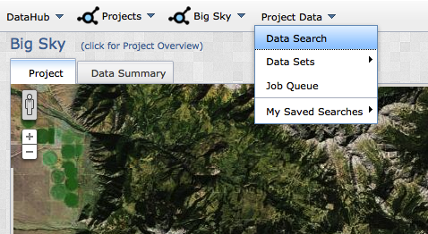
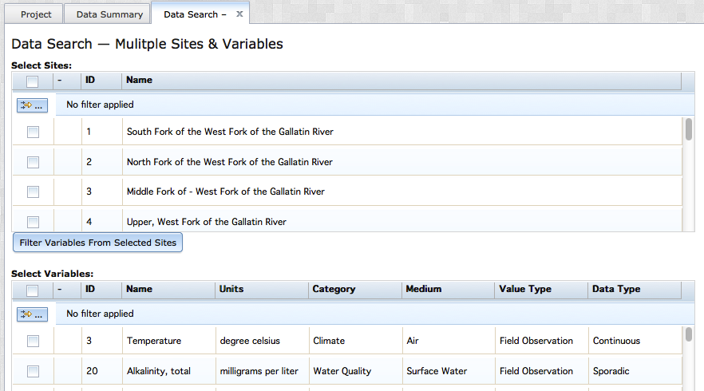
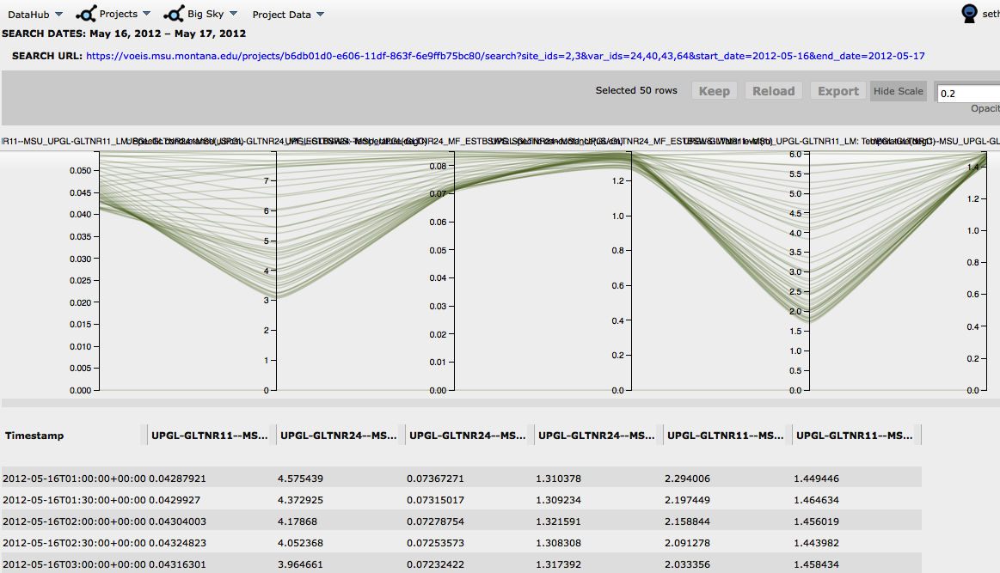

The advanced data search option allows users to query multiple variables from multiple sites within a project. To begin an advanced data search, navigate to the Project_Show page of a project where you have the appropriate user permissions.

With the Project_Show page open, select "Data Search" from the (Project_Name) dropdown menu.

You will be directed to a new tab called "Data Search--" where you will select the site(s), variable(s) and date range that you would like to query. After selecting the desired site(s), be sure to click the "Filter Variable From Selected Sites" button. This will reduce the number of variables in the "Select Variables" data grid so that it only includes variables from the sites you are interested in.

When you have finished defining your query, click the "Perform Search" button. You will be directed to a new browser tab containing the results from your query and a powerful visualization tool called a parallel coordinates plot. The display includes a Search URL that can be pasted into a browser window to repeat this particular query. You may want to cut and paste it somewhere, or include it as reference documentation in your research publications. NOTE: unless you elected to make your project 'Public', only users with VOEIS accounts and the appropriate permissions will be able to use this URL to repeat the query. If your project is private, you must be logged into VOEIS in order to use the URL in the future.

The data grid below the plot contains all of the data values returned by your query. The header contians information about the site and variable associated with each column of data. Mouse over the header to display the full text. You can select value ranges on each of the vertical axes on the parallel coordinate plot to filter the rusults displayed in the data grid. There is one vertical axis for each column fo data in the data grid. Click the "Reload" button to remove your filters. Click the "Export" button to save the data in the data grid to your computer as a .csv file. Only the metadata included in the column headers is exported with the data in the .csv file.
Created with the Personal Edition of HelpNDoc: Free iPhone documentation generator